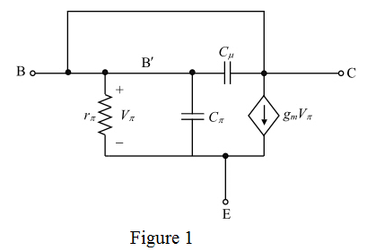

Step 1:
Refer to the high-frequency hybrid- model of the BJT circuit in Figure 9.8 in the text book.
The resistance, that models the resistance of the silicon material of the base region between the base terminal B and a fictitious internal base terminal, is zero.
The output resistance,
Redraw the high-frequency hybrid- model of the transistor of the BJT circuit by replacing resistance, with a short-circuit and the resistance,
model of the transistor of the BJT circuit by replacing resistance, with a short-circuit and the resistance,  with an open-circuit.
with an open-circuit.
Consider the circuit in Figure P9.42 in the text book which has a diode connected to the BJT.

Step 2:
Write the formula for input admittance.

Here,
 is the transconductance of the BJT
is the transconductance of the BJT
 is the emitter-base resistance
is the emitter-base resistance
 is the emitter-base capacitance
is the emitter-base capacitance
The input impedance is the reciprocal of the input admittance.
The effect of  is negligible at high frequencies.
is negligible at high frequencies.
Thus,
The emitter resistance,  is,
is,
Substitute for  in the expression for input impedance.
in the expression for input impedance.
Thus, the expression for is .
Step 3:
Consider the expression for transition frequency,  .
.

At high currents,  is very much greater than
is very much greater than  .
.
So,
Replace with  in the expression for
in the expression for  .
.
Substitute for  .
.
Step 4:
Consider the expression for input impedance,
Substitute for .
Substitute for s.
Step 5:
The phase angle of the input impedance is,
Equate the phase angle to  .
.
Substitute for  .
.
Therefore, the frequency at which the phase angle of the input impedance is .
.
Step 6:
Consider the expression for transition frequency,  .
.
Where,
Transition frequency
Substitute  for
for  .
.
Step 7:
Consider the expression for input impedance,
Substitute for .

Substitute  for s.
for s.
The phase angle of the input impedance is,
Step 8:
Equate the phase angle to .
Substitute for .
.

Therefore, the frequency at which the phase angle of the input impedance is  for is.
for is.